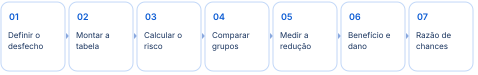
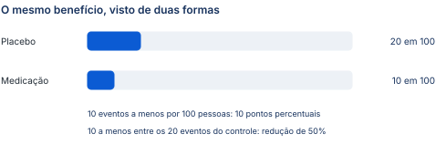
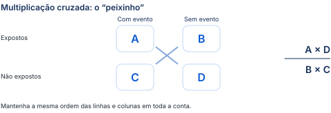

Da tabela de exposição e desfecho ao tamanho do benefício e do dano de uma intervenção.
Conceitos, cálculos resolvidos e armadilhas de interpretação. A legenda de cores está na página 2.
Não será permitido usar calculadora. Os números das contas serão simples; é necessário dominar a montagem da tabela e a sequência do raciocínio.
“Você vai fazer prova de residência, vai cair isso aqui, você tem que saber fazer.”

Primeiro separe quem recebeu a intervenção e quem faz parte do grupo de comparação. Depois conte quem apresentou o evento em cada grupo. Uma tabela bem montada organiza todas as contas seguintes.
| O que comparar | Tabela de diagnóstico | Tabela de exposição e desfecho |
|---|---|---|
| Pergunta | O teste identifica corretamente a doença? | O evento é mais ou menos frequente em determinado grupo? |
| Organização | Resultado do teste e presença real da doença. | Exposição ou intervenção nas linhas; presença do desfecho nas colunas. |
| Medidas | Sensibilidade, especificidade e valores preditivos. | Riscos, reduções, número necessário para tratar e razão de chances. |
As duas têm duas linhas e duas colunas, mas respondem a perguntas diferentes. A prevalência influencia os valores preditivos na avaliação diagnóstica; aqui o foco passa a ser a relação entre exposição e desfecho.
| Grupo | Com desfecho | Sem desfecho | Total |
|---|---|---|---|
| Expostos / intervenção | A | B | A + B |
| Não expostos / controle | C | D | C + D |
Na intervenção, o pesquisador oferece algo, como uma medicação. Na exposição observada, ele acompanha uma condição já presente, como fumar. Obesidade e diabetes são exemplos de fatores de risco que podem definir os grupos.
O grupo de comparação também pode receber tratamento: remédio novo e remédio padrão são duas intervenções diferentes. “Não exposto”, nesse caso, significa não exposto à intervenção principal em estudo.
Desfecho presente não significa resultado bom. “Infarto presente” é um evento desfavorável; “cura presente” é favorável. Nomeie o evento diretamente: ocorrência de infarto, em vez de “redução de infarto positiva ou negativa”.
| Primeira linha | Segunda linha | Evento nas colunas |
|---|---|---|
| Tabagistas | Não tabagistas | Câncer de pulmão: sim / não. |
| Pessoas com obesidade | Pessoas sem obesidade | Hipertensão: sim / não. |
| Cirurgia | Tratamento clínico | Óbito: sim / não. |
Exposição não determina o resultado de cada pessoa: um fumante pode não desenvolver câncer durante o acompanhamento, e uma pessoa que nunca fumou pode apresentar câncer por outros fatores.
O tempo de observação também importa: uma pessoa pode fumar e não desenvolver câncer nos cinco anos do acompanhamento, mesmo que venha a ter a doença depois.
Se o enunciado informa 200 tabagistas e 100 casos de câncer, os outros 100 são tabagistas sem o evento: 200 − 100 = 100.
O estudo acompanhou 200 pacientes, com 100 em cada grupo. Houve 10 infartos entre os que receberam a medicação e 20 entre os que receberam placebo.
| Grupo | Infarto | Sem infarto | Total |
|---|---|---|---|
| Nova medicação | 10 | 90 | 100 |
| Placebo | 20 | 80 | 100 |
Se o enunciado trouxer só os totais e os infartos, complete: 100 − 10 = 90 sem infarto na intervenção; 100 − 20 = 80 no placebo. O grupo controle mostra a frequência do evento na situação de comparação.
Um programa de acompanhamento de hipertensos pode ter como evento o controle da pressão. Nesse caso, o objetivo é aumentar a ocorrência do desfecho.
| Grupo | Pressão controlada | Não controlada | Total |
|---|---|---|---|
| Novo programa | 70 | 30 | 100 |
| Cuidado habitual | 50 | 50 | 100 |
A montagem da tabela é a mesma. A diferença aparece na interpretação: mais controle da pressão representa benefício; mais infartos representa dano.
Para saber a probabilidade do evento em um grupo, divida o número de eventos pelo total de pessoas daquele grupo. Cada grupo tem seu próprio resultado.
10 ÷ 100 = 0,10 = 10%
De cada cem participantes tratados, dez apresentaram infarto.
20 ÷ 100 = 0,20 = 20%
De cada cem participantes do controle, vinte apresentaram infarto.
Não divida 10 pelos 200 participantes do estudo. O risco na medicação é 10 ÷ 100. O total de cada grupo pode ser diferente; por isso, compare proporções e confira o denominador antes de continuar.
Risco absoluto do grupo e redução absoluta do risco são conceitos diferentes. O primeiro descreve a ocorrência do evento em um grupo; a segunda, apresentada adiante, é uma diferença entre dois riscos.
Uma medicação foi associada a náuseas em 18 de 100 pacientes. O risco absoluto de náusea nesse grupo foi 18 ÷ 100 = 0,18 = 18%.
Agora compare a probabilidade do mesmo evento nos dois grupos. O resultado diz quantas vezes o risco da intervenção corresponde ao risco do controle. Depois veja se aumentar esse evento ajuda ou prejudica.
| Resultado | O que acontece com o evento |
|---|---|
| Igual a 1 | Os riscos observados nos dois grupos são iguais. |
| Menor que 1 | O evento ocorre menos no grupo de intervenção. |
| Maior que 1 | O evento ocorre mais no grupo de intervenção. |
Um resultado de 0,5 significa metade do risco no grupo de comparação. Um resultado de 6 significa risco seis vezes o do grupo de comparação. O risco relativo é uma razão; a redução percentual será calculada em outra etapa.
| Desfecho | Risco relativo menor que 1 | Risco relativo maior que 1 |
|---|---|---|
| Desfavorável: infarto, morte ou sangramento. | Menos eventos desfavoráveis: direção de benefício. | Mais eventos desfavoráveis: direção de dano. |
| Favorável: cura, sobrevida ou controle da pressão. | Menos eventos favoráveis: direção desfavorável. | Mais eventos favoráveis: direção de benefício. |
Leia o desfecho antes de chamar o resultado de protetor. Risco relativo de 0,5 para infarto significa menos infartos; o mesmo 0,5 para cura significa menor probabilidade de cura.
Entre 100 fumantes, 30 desenvolveram câncer de pulmão; entre 100 não fumantes, 5 desenvolveram a doença. Os demais foram 70 e 95, respectivamente.
O risco de câncer de pulmão nos fumantes foi seis vezes o dos não fumantes, no acompanhamento considerado.
No novo programa, o risco absoluto do evento “pressão controlada” foi 70%; no habitual, 50%. Assim, 0,70 ÷ 0,50 = 1,4. A probabilidade de controlar a pressão foi 1,4 vez a do cuidado habitual.
| Cálculo | Sangramento | Acidente vascular cerebral |
|---|---|---|
| Novo anticoagulante | 24 ÷ 150 = 16% | 10 ÷ 200 = 5% |
| Anticoagulante padrão | 30 ÷ 300 = 10% | 25 ÷ 200 = 12,5% |
| Risco relativo | 0,16 ÷ 0,10 = 1,6 | 0,05 ÷ 0,125 = 0,4 |
| Interpretação | O risco de sangramento foi 1,6 vez o do tratamento padrão. | O risco de acidente vascular cerebral foi 0,4 vez o do padrão. |
Uma intervenção pode reduzir um evento e aumentar outro. O ácido acetilsalicílico, por exemplo, pode reduzir infarto e aumentar sangramento. É necessário olhar os desfechos relevantes em conjunto.
Na comparação comentada em aula sobre ramipril e vitamina C, foram avaliados morte, infarto e morte cardiovascular. O exemplo ilustra a necessidade de olhar vários resultados: o ramipril apresentou benefício nos desfechos citados, enquanto a vitamina C não mostrou diferença.
Se quem dorme menos de 6 horas apresenta cefaleia em 30% dos casos e quem dorme pelo menos 6 horas em 10%, o risco relativo é 0,30 ÷ 0,10 = 3: o risco no primeiro grupo é três vezes o do segundo.
A mesma mudança pode ser descrita pela proporção de redução em relação ao controle ou pela diferença de eventos no conjunto de pessoas. Por isso, cair de 20% para 10% tem duas leituras corretas.
| Medida | Pergunta | De 20% para 10% |
|---|---|---|
| Redução relativa do risco | Que proporção do risco do controle foi reduzida? | Metade: 50% de redução relativa. |
| Redução absoluta do risco | Qual a diferença entre os riscos dos grupos? | 10 pontos percentuais: dez eventos a menos por cem pessoas. |
Quando o risco relativo é menor que 1, basta identificar quanto falta para chegar a 1. Exemplos: 0,3 corresponde a redução de 70%; 0,95, de 5%; 0,99, de 1%; 0,2, de 80%.
Para um evento desfavorável mais frequente na intervenção, o aumento relativo do risco é risco relativo − 1. O risco relativo de sangramento de 1,6 do anticoagulante representa aumento relativo de 60%.

As barras usam a mesma escala de cem pessoas. A diferença é de dez eventos por cem; em relação aos vinte eventos do controle, houve redução pela metade.
“Maior risco menos menor risco” ajuda a lembrar a diferença quando há redução. Antes, confira a direção: se a intervenção aumenta um evento desfavorável, a diferença representa aumento absoluto do risco. Não transforme aumento de dano em redução benéfica.
Considere uma complicação que cai de 0,05% para 0,005%. A redução relativa é de 90%, mas a diferença absoluta é de apenas 0,045 ponto percentual. Para avaliar o tamanho do benefício, é preciso conhecer também o risco inicial.
As comparações entre grupos descrevem frequências médias. Elas não permitem identificar quais pessoas específicas teriam o evento com ou sem tratamento.
Entre 200 pacientes que receberam a medicação, 20 tiveram acidente vascular cerebral; entre 200 que receberam placebo, 40 tiveram o evento.
| Etapa | Conta |
|---|---|
| Risco na medicação | 20 ÷ 200 = 0,10 = 10% |
| Risco no placebo | 40 ÷ 200 = 0,20 = 20% |
| Risco relativo | 0,10 ÷ 0,20 = 0,5 |
| Redução relativa | 1 − 0,5 = 0,5 = 50% |
| Redução absoluta | 0,20 − 0,10 = 0,10 = 10 pontos percentuais |
Nova medicação: 10 em 100. Placebo: 25 em 100.
Risco relativo: 0,10 ÷ 0,25 = 0,4.
Redução relativa: 60%.
Redução absoluta: 15 pontos percentuais.
Controle: 8%. Intervenção: 4%.
Risco relativo: 0,04 ÷ 0,08 = 0,5.
Redução relativa: 50%.
Redução absoluta: 4 pontos percentuais.
Nem toda pessoa tratada terá um evento evitado. A diferença de risco entre grupos permite estimar quantas pessoas precisam receber a intervenção para evitar um evento adicional, em comparação ao controle.
No exemplo do infarto, 1 ÷ 0,10 = 10. Isso significa tratar dez pacientes para evitar um infarto adicional em relação ao grupo de comparação. Quanto menor esse número, maior o benefício absoluto, para o mesmo desfecho e contexto.
Não use “10” como denominador para uma redução de 10 pontos percentuais. A conta é 1 ÷ 0,10. Também não use a redução relativa de 50%: o cálculo depende da diferença absoluta entre os grupos.
O número necessário para tratar se refere ao período de acompanhamento do estudo. Ele não significa que, em cada grupo concreto de dez pessoas, será possível apontar exatamente uma que teve o evento evitado.
Após cirurgia abdominal, 20 dos 250 pacientes do protocolo de mobilização precoce desenvolveram pneumonia hospitalar. No cuidado habitual, foram 64 de 400.
| Etapa | Conta |
|---|---|
| Risco na mobilização | 20 ÷ 250 = 0,08 = 8% |
| Risco no cuidado habitual | 64 ÷ 400 = 0,16 = 16% |
| Risco relativo | 0,08 ÷ 0,16 = 0,5 |
| Redução relativa | 1 − 0,5 = 0,5 = 50% |
| Redução absoluta | 0,16 − 0,08 = 0,08 = 8 pontos percentuais |
| Número necessário para tratar | 1 ÷ 0,08 = 12,5; arredondando para cima: 13 pacientes. |
É necessário submeter 13 pacientes ao protocolo para evitar uma pneumonia adicional em comparação ao cuidado habitual. Não existe meio paciente na aplicação desse resultado.
Se o risco no controle é 12% e na intervenção é 8%, a redução absoluta é 4 pontos percentuais, ou 0,04. Logo, 1 ÷ 0,04 = 25 pacientes para evitar um evento adicional.
O número necessário para causar dano estima quantos pacientes precisam receber a intervenção para que ocorra um evento adverso adicional. A interpretação da intervenção depende tanto do benefício quanto do dano.
Quando há aumento de um evento adverso: número necessário para causar dano = 1 ÷ aumento absoluto do risco. O aumento absoluto é o risco na intervenção menos o risco no controle, em decimal.
| Contexto do exemplo | Para evitar um infarto | Para causar um sangramento |
|---|---|---|
| Prevenção secundária: quem já teve infarto ou acidente vascular cerebral. | 77 pacientes tratados. | 400 pacientes tratados. |
| Prevenção primária: quem nunca teve esses eventos. | 333 pacientes tratados. | 250 pacientes tratados. |
No primeiro cenário, o benefício é mais frequente que o sangramento adicional; no segundo, o sangramento adicional é mais frequente que o infarto evitado. O exemplo mostra por que o mesmo remédio pode ter utilidade diferente em populações distintas.
“Uma decisão clínica depende do equilíbrio do benefício e do dano, como quase tudo na medicina.”
Esses valores ilustram os cenários discutidos e não são constantes universais da aspirina. A decisão também depende da gravidade dos eventos, do risco individual, do tempo de seguimento e das contraindicações. Comparar apenas os números não substitui essa avaliação.
O valor 1 foi apresentado como ideal não encontrado na prática: um evento evitado por pessoa tratada. A aula citou valores de 1,2 e 1,5 como exemplos de benefícios muito grandes de antibióticos hospitalares, para ilustrar que valores menores representam maior efeito absoluto.
O valor 1 é matematicamente possível se a diferença absoluta for 100 pontos percentuais. Não existe um número necessário para tratar único para “antibióticos hospitalares”: cada estimativa exige uma intervenção, uma população, um desfecho e um período definidos.
Recurso indicado na aula: The NNT · thennt.com, com sínteses de benefícios e danos de intervenções.
No estudo de caso-controle, a seleção começa por quem tem e quem não tem a doença, e depois se examina a exposição anterior. Como esses grupos são escolhidos pelo desfecho, a amostra não fornece diretamente o risco de adoecer.
O risco usa eventos divididos pelo total do grupo. A odds, traduzida como chance em seu sentido técnico, usa eventos divididos por não eventos. A razão de chances compara duas odds.
| Medida | Expostos | Não expostos |
|---|---|---|
| Risco absoluto | A ÷ (A + B) | C ÷ (C + D) |
| Odds | A ÷ B | C ÷ D |

| Grupo | Com câncer | Sem câncer |
|---|---|---|
| Fumantes | A = 80 | B = 40 |
| Não fumantes | C = 20 | D = 60 |
Odds nos fumantes: 80 ÷ 40 = 2. Nos não fumantes: 20 ÷ 60 = 1/3. A razão é 2 ÷ (1/3) = 6.
A odds de câncer entre fumantes é seis vezes a odds entre não fumantes. Não troque essa frase por “a probabilidade é seis vezes maior”: odds e probabilidade têm denominadores diferentes.
Não calcule risco diretamente de uma amostra típica de caso-controle. Para a razão de chances, use a multiplicação cruzada. Evite arredondar resultados intermediários: mantenha 20/60 como fração e arredonde só o resultado final.
Das 60 pessoas que usavam telas, 30 tinham insônia. Das 40 que não usavam, 10 tinham insônia. Complete os não eventos: 60 − 30 = 30; 40 − 10 = 30.
| Grupo | Com insônia | Sem insônia |
|---|---|---|
| Usam telas | 30 | 30 |
| Não usam telas | 10 | 30 |
A odds de insônia foi três vezes a do grupo que não usava telas.
O enunciado de telas permite calcular a razão de chances, mas não informa como os participantes foram selecionados. Pessoas já apresentarem a doença não basta para definir caso-controle; o exemplo também pode representar uma avaliação transversal. A razão de chances pode ser calculada em outros desenhos.
| Grupo | Com palpitação | Sem palpitação |
|---|---|---|
| Consumo frequente | A = 9 | B = 141 |
| Grupo de comparação | C = 6 | D = 294 |
A odds de palpitação foi aproximadamente 3,13 vezes a do grupo de comparação. O valor é arredondado para duas casas decimais apenas no fim.
Página de véspera: tabela, riscos de cada grupo, comparação e interpretação do evento.
1 · Tabela. Linhas: exposição ou intervenção. Colunas: evento presente ou ausente. A/B: expostos. C/D: controles. Desfecho presente pode ser bom ou ruim.
3 · Risco relativo. Intervenção ÷ controle. Igual a 1: riscos iguais; menor que 1: menos eventos; maior que 1: mais eventos. Benefício ou dano depende do desfecho.
5 · Número necessário para tratar. 1 ÷ redução absoluta em decimal. Com 0,10: 10 pessoas. Na mobilização: 1 ÷ 0,08 = 12,5; arredonde para 13. De 12% para 8%: 25 pessoas.
Benefício e dano precisam ser avaliados juntos. Aspirina no exemplo: prevenção secundária, 77 para evitar infarto e 400 para causar sangramento; primária, 333 e 250.
6 · Razão de chances. (A × D) ÷ (B × C). Caso-controle não fornece risco diretamente. Tabagismo: 6; telas: 3; energéticos: aproximadamente 3,13.
Usar o total do estudo no risco de um grupo; confundir porcentagem com pontos percentuais; interpretar razão de chances como se fosse risco relativo.